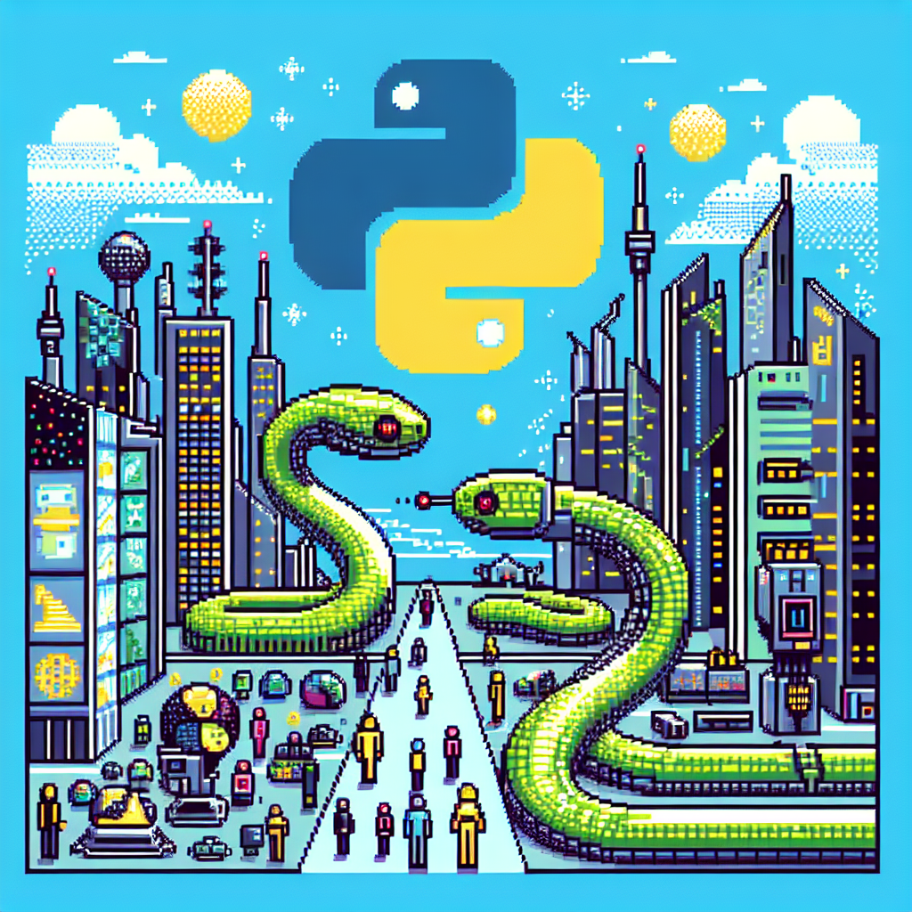

The future of Python and AI
Python has become one of the most popular programming languages in recent years, and its use in the field of AI and machine learning has only added to its popularity. As the demand for AI and ML continues to grow, it's natural to wonder what the future holds for Python.
One of the main reasons for Python's success in AI and ML is its simplicity and versatility. Its easy-to-learn syntax and vast array of libraries make it a popular choice for developers of all levels. This has also led to a large community of developers constantly working to improve and expand Python's capabilities.
As AI and ML continue to advance, it's likely that Python will play an even bigger role in their development. With the rise of deep learning and neural networks, Python's libraries such as TensorFlow and PyTorch have become essential tools for building and training these models.
Furthermore, Python's popularity in data science and analytics makes it a perfect fit for AI and ML projects. Its ability to handle large datasets and perform complex calculations makes it an ideal choice for data-driven applications.
In addition to its technical capabilities, Python's open-source nature also contributes to its potential for future growth. This means that anyone can contribute to its development, leading to constant improvements and new features being added.
Some experts predict that as AI and ML become more mainstream, Python will become the go-to language for these technologies. This is due to its accessibility, community support, and its ability to handle both simple and complex tasks.
However, there are also concerns that Python may not be able to keep up with the rapidly evolving field of AI and ML. As new technologies and techniques emerge, there may be a need for more specialized languages to handle specific tasks.
Despite these concerns, it's safe to say that Python will continue to be a dominant force in AI and ML for the foreseeable future. Its flexibility, simplicity, and community support make it an ideal language for building intelligent applications.
In conclusion, the future of Python and AI looks bright. With its powerful capabilities and dedicated community, it's likely that we will see even more exciting advancements in this dynamic field in the coming years. Whether you're a seasoned developer or just starting to learn Python, there has never been a better time to dive into the world of AI and ML.